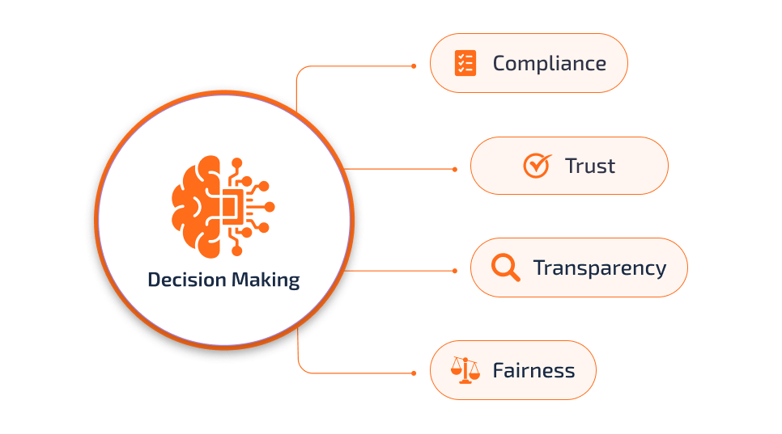

Explainability for AI systems is about the methodologies and techniques that you use to make the decision making processes of AI systems transparent and understandable to humans. As a leader in AI explainability development we help you enhance your user confidence in the AI systems you have by clearly explaining how decisions are made. Our expert team of industry leading AI professionals also helps your organization comply with legal and ethical standards which aim at making AI operations transparent. As a leading AI development company we can also help you mitigate biases with your AI systems where we identify and address potential biases within your AI models and ensure fairness and equity. Provide your users with unmatched and seamless experiences with our stellar team of AI explainability development experts.

AI Explainability Development
The core components for ensuring the explainability of your AI are transparency, interpretability and justifiability. We help you ensure that your AI systems operate in an open manner which allows the key stakeholders in your organization to observe and understand the pathways of decision making. Our AI agent development experts also help you design AI models of which the internal mechanics can be easily interpreted by humans which enhances the level of comprehension. We also provide you with clear and logical explanations for AI driven decisions so that your stakeholders can justify the outcomes of your AI. There are a few challenges that we address with our AI explainability development services like complexity of models, performance vs explainability and stakeholder diversity. Firstly, advanced AI models like for example deep learning networks are often called black boxes because it is difficult to interpret their decision making. It is also important and at the same time difficult to strike the balance between accuracy and explainability because simplifying AI models for clarity can reduce their performance.
AI Explainability Development Services
We provide you with end to end services for AI explainability development and have a host of offerings that can suit your business. We help you with model assessment which is where we evaluate your existing AI models to determine what their level of explainability is and identify key areas where we can implement improvements. Custom development is also something inside our wheelhouse and we help you build your own AI as well as design and implement explainability solutions that are tailored to the specific needs of your business and regulatory requirements. We also provide you with integration support where we assist you in seamlessly incorporating explainability tools into your existing AI systems and workflows. As part of our AI explainability development services we also provide you with training and workshops where we deliver educational sessions to upskill your teams on the importance of explainability for AI and how to utilize relevant tools and techniques.
AI Explainability Development Company
As one of the top AI companies We have deep expertise when it comes to AI explainability solutions and we work with businesses from all parts of the world helping them enhance their AI systems. We have a highly specialized and experienced team which include expert professionals in AI, machine learning and data science with a keen focus on explainability and transparency. Our AI explainability development services also come with nearly a decade of software development experience especially with emerging technologies like AI. We also ensure that we use the most cutting edge methodologies and tools to help you build state of the art explainability solutions for your business. Our team follows a very client centric approach for delivering our services to you and we provide you with highly tailored strategies that you can use to address the unique challenges and objectives of your business. We engage with you very collaboratively throughout the development process of your solution to ensure that the solutions we provide meet the specific needs and expectations you have with our extensive AI explainability development services.
AI Explainability Services
Our comprehensive AI consulting services cover everything you need for your business from explainability audits to ethical AI consulting. We help you conduct in depth evaluations of your AI systems to understand the levels of transparency it has and identify opportunities where we can improve it. We also help you with policy formation where we assist you in developing organizational policies that promote the adoption of explainable practices for AI. Our team also helps you build customized tools for visualizing and interpreting AI decision making processes effectively. Ethical AI consulting is also a big part of our AI explainability development services where our experts provide you guidance for implementing ethical AI frameworks that put things like fairness, accountability and transparency as a priority. With this you will be able to mitigate risk with your AI systems, enhance the decision making process and get a competitive edge to be leaders in responsible AI
AI Explainability Solutions
Our solutions for AI explainability cover a wide spectrum of needs your business might have. We can help you implement tools that can analyze and clarify the decisions taken by your AI models without having to alter their structure. Our team can also help you develop AI models that are inherently designed for ensuring transparency like for example decision trees and rule based systems as part of our AI explainability development services. We also create interactive platforms like visualization dashboards where you can graphically represent the decision pathways of your AI allowing you access more complex data. Our team of artificial intelligence development experts can also integrate systems that translate the decisions of your AI into plain language that you can understand which enhances comprehension for users.
Explainable AI (XAI) Development
One of the major objectives of building Explainable AI or XAI is to make sure that your users can interpret AI driven processes. It also improves trustworthiness significantly and enables your stakeholders to use AI based recommendations with confidence. Our AI explainability development also helps you ensure that your AI models meet global regulatory requirements like GDPR, HIPAA and other industry specific regulations. We also use cutting edge techniques for developing XAI solutions like for example SHapley Additive Explanations or SHAP which is a popular method to explain feature importance when it comes to predictions provided by AI models. Local Interpretable Model Agnostic Explanations or LIME is also a technique we use which provides you with human readable explanations by approximating black box models with interpretable models that are simpler.
Machine Learning Interpretability
As a leading AI explainability development company our expert team is well versed in various concepts within explainability and AI technologies as a whole. There are majorly two types of interpretability; Global Interpretability and Local Interpretability. Global interpretability is all about understanding how an AI model makes decisions across all data inputs. While local interpretability is about explaining specific and individual decisions of AI models. As part of this we use several techniques to deliver our services like feature importance analysis where we help you identify the most influential factors in the decisions of your AI models. Another technique we use in our AI explainability development services is partial dependence plots or PDPs that show how your AI model’s predictions change when your input variables change. Gradient based methods are also something we use which you can use in deep learning models to show which parts of an image or dataset triggered the prediction.
Explainable AI examples
Here are some examples for explainable AI and how they can be used in real world scenarios.
- You can create an AI chatbot that can explain why it chose a specific response to a customer support question.
- Models that can use sentiment analysis can also justify why a text is classified as positive, negative or neutral.
- AI driven language translation systems can also help in showing which words and phrases influenced translations
- Your AI system could explain how it identified a person in an image and highlight their prominent facial features used.
- Object detection models could also provide reasons why they classified an object in a specific category.
- You can also implement AI powered surveillance systems that could clarify why an individual or behavior was flagged as suspicious.
- You can implement AI powered resume screening systems explaining why certain candidates were shortlisted.
- Employee performance prediction models could justify why a specific resource was recommended for promotion.
- You can even implement AI driven interview analysis systems that can explain how tone, word choice and responses influenced candidate evaluations.
Hire Explainable AI developer
Our AI explainability development services include flexible plans to hire resources from our expert team and integrate them into your team. We also provide you with flexible pricing plans on a per project, hourly and monthly retainer based models for maximum flexibility for your project.
Technology Stack
We use the latest in AI technologies to bring you innovative solutions that your users will love and that aligns with your specific needs as a business.
- Python
- R
- Java
- TensorFlow
- PyTorch
- Scikit-Learn
- Matplotlib
- Seaborn
- Plotly
- D3.js
Industries
We provide full scale services for AI explainability development and work with businesses from different and diverse industries.
- AI powered diagnostics need explainability to build trust among doctors and patients.
- Transparency is essential for complying with global medical regulations.
- AI driven credit scoring can explain why loans are approved or denied.
- Transparency is also essential for complying with financial regulations.
- You can enhance customer engagement by showing why specific products are recommended.
- You easily justify pricing decisions and strategies for inventory management
- You can implement AI driven maintenance solutions that can explain why machinery might fail soon.
- You can get insights into optimization decisions for your supply chain.
- Legal research tools that are powered by AI can explain why certain case laws are relevant
- Compliance automation AI has to be transparent to ensure legal soundness.
Why Choose Us


Build Scalable and Reliable AI Systems With Our AI Explainability Development Services
Explainable AI or XI is on its way to transform businesses and the way they interact with their customers. Our team of industry leading AI explainability development experts help you make your complex machine learning models more transparent, interpretable and trustworthy. The need for explainable AI is more than ever especially with AI dominating all aspects of business and industries. Whether you need post hoc explainability tools, interpretable model design or visualization dashboard our expert team works closely with you to understand your business, your unique goals and challenges and provides you with solutions that enable you to give your users great experiences. Speak to one of our explainable AI experts to get started in your journey.
Frequently Asked Questions
Explainability for AI models is the ability to understand and interpret how an AI system makes decisions. It is important for building trust, ensuring fairness and to meet the regulatory requirements for AI applications.
It helps build trust, reduces bias and improves compliance and leads to better AI adoption and confidence with users.
Businesses can ensure transparency by using interpretable AI models, conducting audits and documenting AI decisions to meet regulations.
SHAP, LIME, decision trees, visualizations and counterfactual explanations can improve the interpretability.
XAI helps you enhance compliance, reduce risks and improve your decision making while holding customer trust.